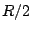
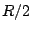
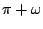
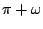
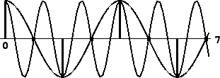

So far we have discussed digital audio signals as if they were capable of
describing any function of time, in the sense that knowing the values the
function takes on the integers should somehow determine the values it takes
between them. This isn't really true. For instance, suppose some function
 (defined for real numbers) happens to attain the value 1 at all integers:
(defined for real numbers) happens to attain the value 1 at all integers:
It is customary at this point in discussions of computer music to invoke
the famous
Nyquist theorem.
This states (roughly speaking) that if a function is a finite or even infinite
combination of sinusoids, none of whose angular frequencies exceeds  ,
then, theoretically at least, it is fully determined by the function's values
on the integers. One possible way of reconstructing the function would be
as a limit of higher- and higher-order polynomial interpolation.
,
then, theoretically at least, it is fully determined by the function's values
on the integers. One possible way of reconstructing the function would be
as a limit of higher- and higher-order polynomial interpolation.
The angular frequency  , called the Nyquist frequency, corresponds
to  cycles per second if
, called the Nyquist frequency, corresponds
to  cycles per second if  is the sample rate. The corresponding period
is two samples. The Nyquist frequency is the best we can do in the sense that
any real sinusoid of higher frequency is equal, at the integers, to one whose
frequency is lower than the Nyquist, and it is this lower frequency that will
get reconstructed by the ideal interpolation process. For instance, a
sinusoid with angular frequency between
is the sample rate. The corresponding period
is two samples. The Nyquist frequency is the best we can do in the sense that
any real sinusoid of higher frequency is equal, at the integers, to one whose
frequency is lower than the Nyquist, and it is this lower frequency that will
get reconstructed by the ideal interpolation process. For instance, a
sinusoid with angular frequency between  and
and  , say ,
can be written as
, say ,
can be written as
|  |
We conclude that when, for instance, we're computing values of a
Fourier series (Page  ),
either as a wavetable or as a real-time signal, we had better leave out any
sinusoid
in the sum whose frequency exceeds
),
either as a wavetable or as a real-time signal, we had better leave out any
sinusoid
in the sum whose frequency exceeds  . But the picture in general is not
this simple, since most techniques other than additive synthesis don't lead to
neat, band-limited signals (ones whose components stop at some limited
frequency). For example, a sawtooth wave of frequency
. But the picture in general is not
this simple, since most techniques other than additive synthesis don't lead to
neat, band-limited signals (ones whose components stop at some limited
frequency). For example, a sawtooth wave of frequency  , of the form
put out by Pd's phasor~ object but considered as a continuous
function
, of the form
put out by Pd's phasor~ object but considered as a continuous
function  , expands to:
, expands to:
Many synthesis techniques, even if not strictly band-limited, give partials
which may be made to drop off more rapidly than  as in the sawtooth
example, and are thus more forgiving to work with digitally. In any case,
it is always a good idea to keep the possibility of foldover in mind, and
to train your ears to recognize it.
as in the sawtooth
example, and are thus more forgiving to work with digitally. In any case,
it is always a good idea to keep the possibility of foldover in mind, and
to train your ears to recognize it.
The first line of defense against foldover is simply to use high sample rates; it is a good practice to systematically use the highest sample rate that your computer can easily handle. The highest practical rate will vary according to whether you are working in real time or not, CPU time and memory constraints, and/or input and output hardware, and sometimes even software-imposed limitations.
A very non-technical treatment of sampling theory is given in [Bal03]. More detail can be found in [Mat69, pp. 1-30].